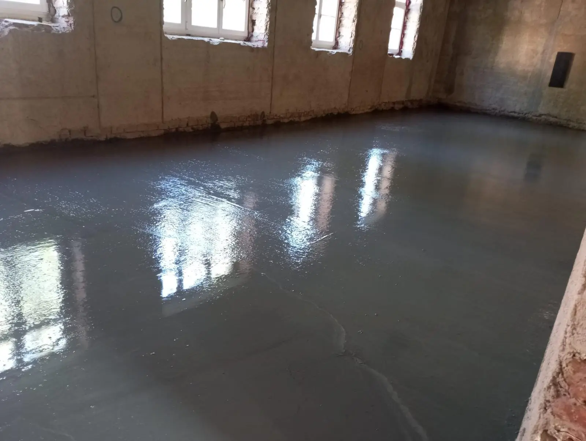
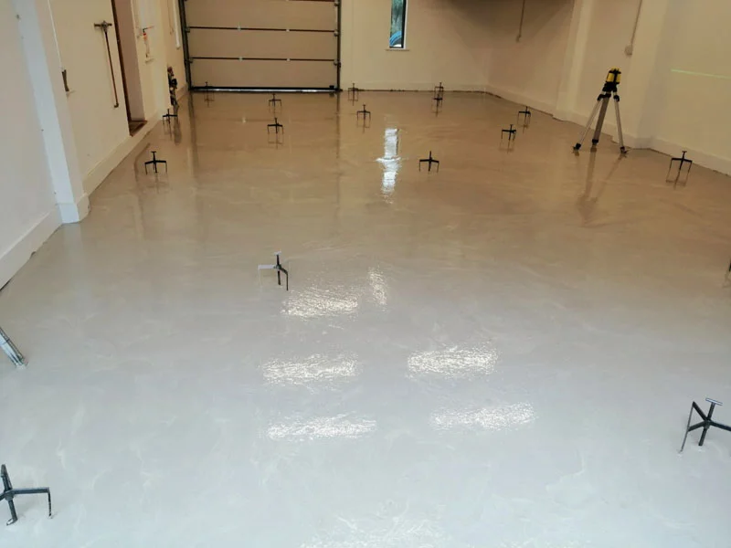
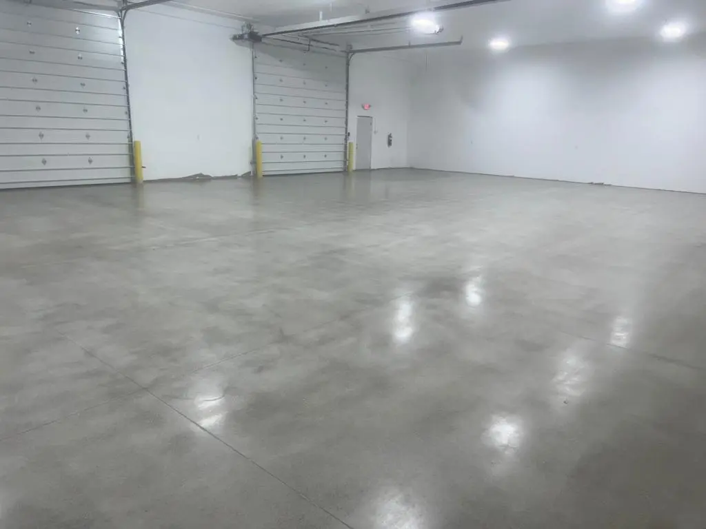
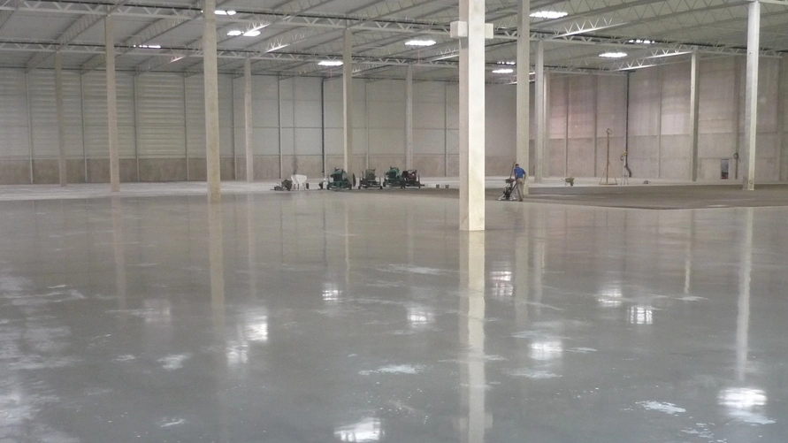
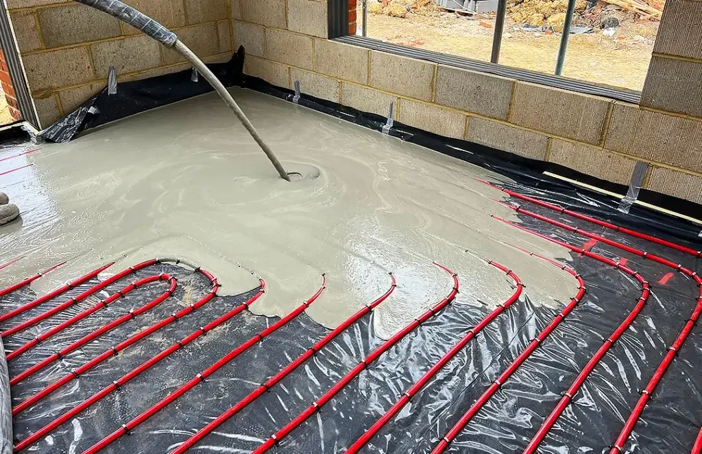
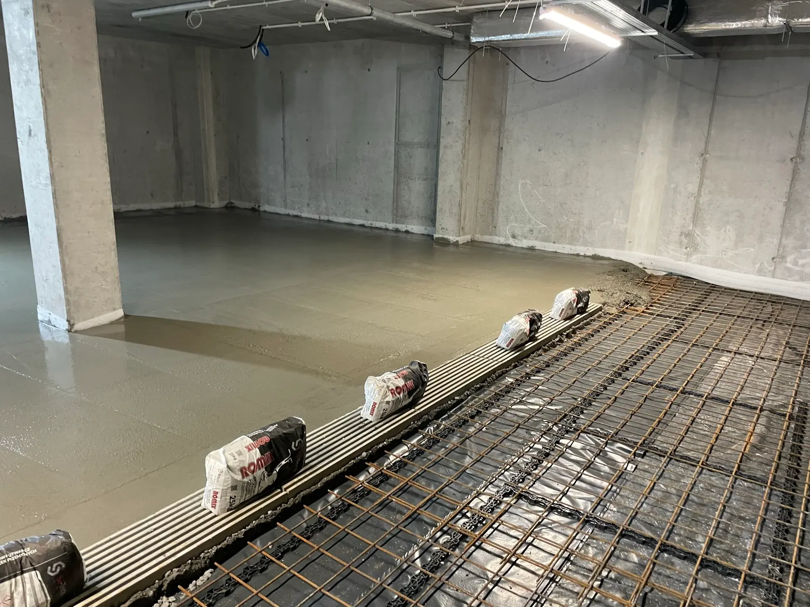
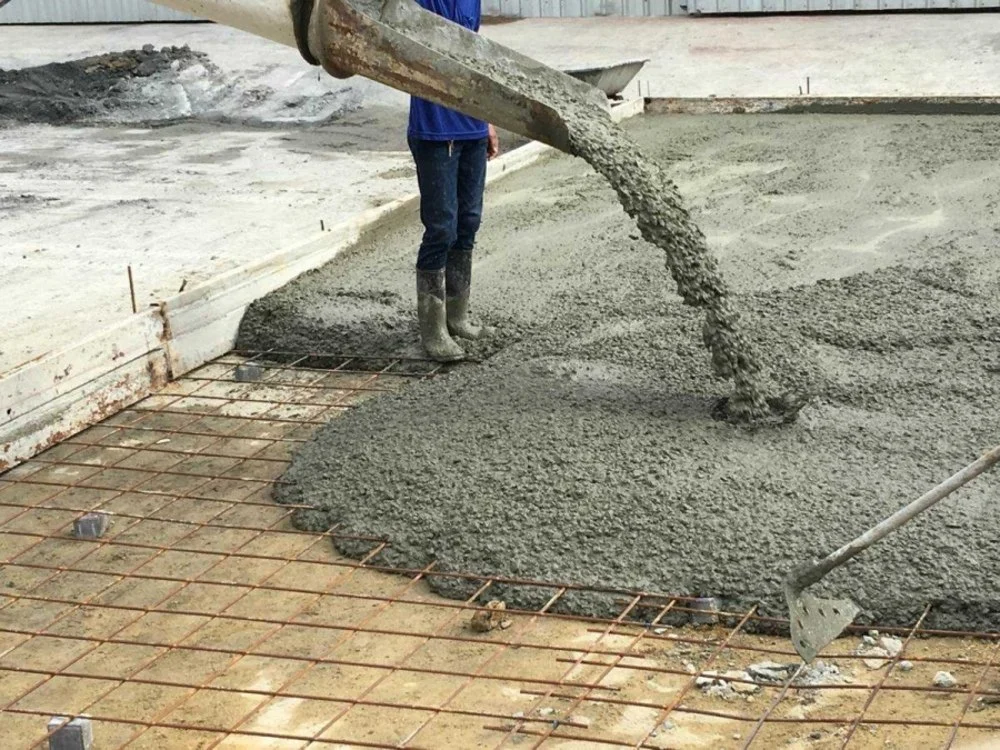

Každý prostor si žádá jiné řešení. Podívejte se na kompletní přehled podlah, které realizujeme — od klasických potěrů po exkluzivní leštěné betony.
Základ moderního stavebnictví. Betonová podlaha nabízí výjimečnou pevnost, životnost a univerzální využití pro novostavby i rekonstrukce. Beton je materiál který vydrží generace — bez spár, bez potřeby výměny, s minimální údržbou. Betonové podlahy realizujeme v Olomouci a celém Olomouckém kraji, od rodinných domů přes garáže až po komerční objekty. Správná tloušťka a třída betonu jsou klíčové — poradíme s výběrem pro každý projekt.
📖 Čtěte také: Jak se starat o betonovou podlahu · Rekonstrukce podlahy krok za krokem

BETONSamonivelační litý anhydritový potěr na bázi síranu vápenatého — nejoblíbenější lití podlaha pro rodinné domy a bytové domy s podlahovým topením. Díky tekuté konzistenci se materiál sám dokonale rovinná a obteče i složité instalace topných hadů bez nutnosti vibrování. Anhydritová podlaha dosahuje rovinnosti ±2 mm na 2 metry, což je základ pro kvalitní pokládku vinylů, dlažby nebo plovoucích podlah. Realizujeme anhydritové podlahy v Olomouci, Šternberku, Prostějově, Přerově i Brně — od 35 mm tloušťky s pochůzností do 48 hodin.
📖 Čtěte také: Anhydrit vs. beton – co vybrat? · Podlahové topení a anhydrit · Jak správně vysychat anhydrit

ANHYDRITLeštěný beton je prémiová volba pro showroomy, restaurace, loftové byty, kanceláře i výrobní haly kde záleží na designu. Mechanickým broušením diamantovými kotouči a postupným leštěním vzniká zrcadlový povrch s mimořádnou odolností proti opotřebení a chemikáliím. Leštěná betonová podlaha nevyžaduje koberce, dlažbu ani vinylové krytiny — je bez spár, snadno čistitelná a časem krásní. Stupeň lesku volíte od matného průmyslového povrchu až po zrcadlový luxusní vzhled. Realizujeme leštěný beton v Olomouci a okolí, Brně i po celé Moravě.
📖 Čtěte také: Průvodce leštěným betonem · Leštěný beton jako luxusní prvek

LEŠTĚNÝPrůmyslová podlaha pro firmy musí přežít provoz vysokozdvižných vozíků, těžké techniky i chemické vlivy — a to desítky let. Realizujeme drátobetonové průmyslové podlahy, hlazené betonové povrchy a epoxidové systémy pro výrobní haly, logistická centra, autoservisy a sklady. Průmyslové betonové podlahy navrhujeme dle projektové dokumentace s ohledem na nosnost, tloušťku a povrchovou úpravu. Působíme v celém Olomouckém a Jihomoravském kraji — rádi zajistíme prohlídku a nabídku na míru.
📖 Čtěte také: Průmyslové podlahy – kompletní průvodce · Jak vybrat průmyslovou podlahu pro firmu

PRŮMYSLKlasické a spolehlivé řešení pro vyrovnání podkladu. Cementový potěr je univerzální — hodí se pod dlažbu, vinyl, koberec i dřevěnou podlahu. Vysoká pevnost v tlaku a odolnost vůči vlhkosti.

POTĚRNezbytný základ každé kvalitní podlahy. Podkladní beton vytváří rovný, pevný a stabilní podklad pro další vrstvy — izolaci, topení a finální nášlapnou vrstvu. Správný podklad = dlouhá životnost.

PODKLADMonolitická železobetonová deska — základ celé stavby. Realizujeme kompletně od výkopu přes armování až po finální betonáž. Přesné provedení dle projektové dokumentace s důrazem na statiku.

ZÁKLADRychlý přehled hlavních vlastností našich podlah. Nejste si jistí? Rádi poradíme.
| Vlastnost | Betonová | Anhydritová | Leštěná | Průmyslová | Cementový potěr |
|---|---|---|---|---|---|
| Podlahové topení | Vhodná | ★ Ideální | Vhodná | — | Vhodný |
| Designový vzhled | Základní | Základní | ★ Luxusní | Funkční | Základní |
| Odolnost vůči zátěži | Vysoká | Střední | Vysoká | ★ Extrémní | Vysoká |
| Rychlost realizace | Střední | ★ Rychlá | 2–3 týdny | Střední | Rychlá |
| Rovinnost povrchu | Dobrá | ★ Výborná | Výborná | Dobrá | Dobrá |
| Chemická odolnost | Dobrá | Omezená | Dobrá | ★ Vysoká | Dobrá |
| Odolnost vůči vlhkosti | Vysoká | Nízká | Vysoká | ★ Vysoká | Vysoká |
| Vhodné pro | Univerzální | Interiéry s topením | Showroomy, lofty | Haly, sklady | Pod krytiny |
Poradíme vám s výběrem ideální podlahy pro váš projekt. Konzultace zdarma, nabídka do 48 hodin.